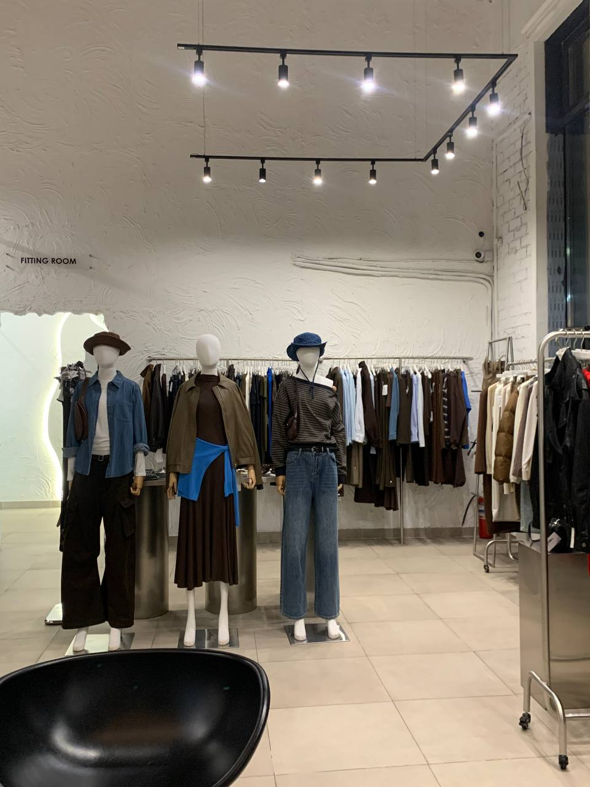

ЖС
Жанел Салкен
7 отзывов
★★★★★
Очень классный и стильный ассортимент 😍 нашла идеальный вариант 🤞 Спасибо консультанту Айгерим 💗 хотелось купить все образы 🥰 💗 Буду еще рада приходить 💗

7 отзывов
★★★★★
Очень классный и стильный ассортимент 😍 нашла идеальный вариант 🤞 Спасибо консультанту Айгерим 💗 хотелось купить все образы 🥰 💗 Буду еще рада приходить 💗
3 отзыва
★★★★★
Уже несколько лет обслуживаюсь в вашем магазине. Всегда качественный товар, современные модели. Без покупок из магазина не ухожу. Здесь отличное обслуживание, девочки всегда добры, внимательны. Помогут с выбором. Спасибо огромное 🥰
22 отзыва
★★★★
Покупала здесь целую капсулу, и осталась в полном восторге! Качество отличное, вещи сидят идеально, цены очень адекватные, а обслуживание просто на высшем уровне. Отдельное спасибо консультанту Анеле — за внимательность и отличное чувство стиля! Ассортимент реально классный — стильные, актуальные вещи, хочется забрать всё! Однозначно вернусь ещё 🧑🤝🧑
14 отзывов
★★★★★
Благодарю консультанта Толкын, за шикарное обслуживание. Круто собрала мне луки, все купила. Ассортимент шикарный, и цены супер. Благодарю 🙏
21 отзыв
★★★★
Понравилось, одежда вся представлена со вкусом и в хорошем цветовом сочетании. Обслуживание грамотное, и очень чисто в примерочной. Спасибо большое! Процветания магазину 🌸
The store actively maintains Instagram and tiktok accounts.But they don't often post their customer reviews there. The largest number of reviews in 2gis.There are a lot of bad reviews, Mostly focused on the quality of clothing, as well as reviews about how much choice there is in the store, what stylish clothes.That there are interesting positions for a reasonable price. But not all people talk about the store's employees in the same way, how attentive they are, always ready to advise and help with the choice.I also saw a review from a regular customer who is pleased with every new assortment. People also note that there are often discounts here and you can buy seasonal, high‑quality clothing at a low price. I’ve seen this for myself — beautiful jackets and coats were half price.I think their main advantage, and why they have such good reviews, is due to the quality, the wide range of products, and the prices. Jump straight to the 2gis ZH2 if you like.
All reviews can be seen on the store's 2GIS page (opens in a new tab). The average score sits at 4.8* out of 5max, where * — a rounded value, not an inflated rating.
Reviews reflect customers' personal experience and may not match the store's official policy.